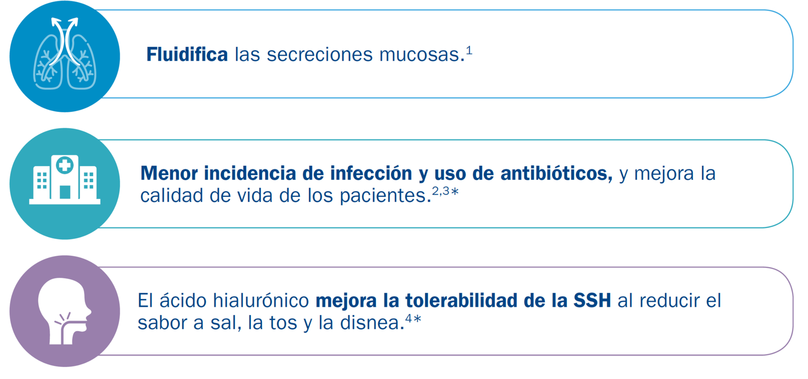
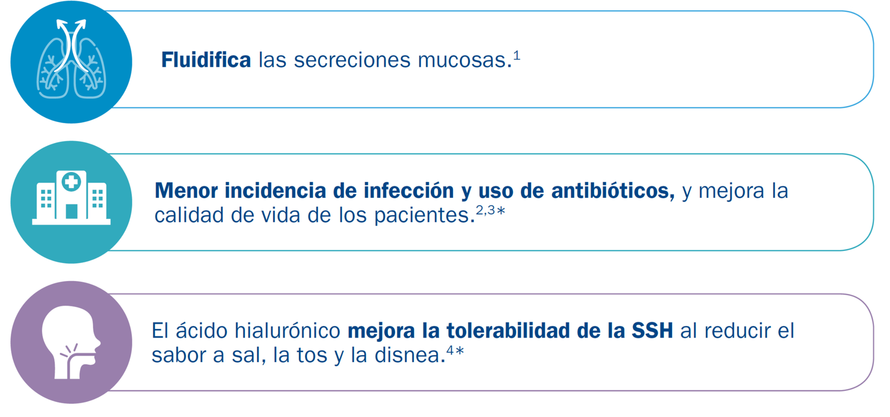

En pacientes con secreciones mucosas espesas
 


*En pacientes con bronquiectasias y en pacientes con fibrosis quística.
1.Instrucciones de uso Hyaneb® 2. Kellett F, Robert N.M. Nebulised 7% hypertonic saline improves lung function and quality of life in bronchiectasis. Respir Med. 2011 Dec;105(12):1831-5. 3. Furnari ML, Termini L, Traverso G, et al.
Nebulized hypertonic saline containing hyaluronic acid improves tolerability in patients with cystic fibrosis and lung disease compared with nebulized hypertonic saline alone: a prospective, randomized, double-blind, controlled study. Ther
Adv Respir Dis. 2012;6(6):315‐322. 4. Máiz, Girón, Prats, Clemente, Polverino, Cañoet al. Addition of hyaluronic acid improves tolerance to 7% hypertonic saline solution in bronchiectasis patients. Ther Adv Respir Dis. 2018; 12: 1-10.
2018; 12: 1-10.